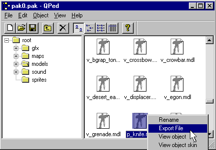

|
|
A lot of you that have dropped in on the some of the chat channels I frequent to say thanks. I am proud to see such budding artist in the 3D realm and the prais is much appreciated! As mentioned on the last page of "Making a World Model for Half-Life" we will be taking the model that we just made into a "p_" model. And if all goes well with the series, we will move on to a "v_" model, which will require animation. Then I hope to help you make a character model. download of this entire Tutorial in HTML is available at: http://www.drawcad.com/upload/HL-P-model-Tutorial.zip
Note: You will need to have Internet Explorer version 4.0 or higher to view this on your computer as it was written in the Microsoft CHM help file format.
As mentioned in the "Making a World Model for Half-Life" tutorial, you will need to get a copy of the Milkshape 3D program by Mete Ciragan. This can be found at the following web site: http://www.swissquake.ch/chumbalum-soft/index.html
Another program that we will be using for the extraction of Valves and other add on packs and Modifications models is called Qped. You can find this at:
http://www.planetquake.com/qped/
Another program that will be useful in your creation of models is the Half-Life Model Viewer that can be found at:
http://www.swissquake.ch/chumbalum-soft/hlmv/
These models are what you see in the 3rd person, as what you see another player hanging onto in battle, e.g. a glock, etc. This is a required model to be able to view your model if someone else happens to be using it to get you with it.There is no animations that are involved in it. In actuality it should be easier than a world model, because on rare occasions you see a world model that has some animations. For example, take a look at the "w_squeaknest" model in "HLMViewer.exe." You will see it has 2 animations, one that never is used in HL, called "walk." The hard part about the "p_" model is that you have to have the supporting biped's bones added to it, or at least a portion of it, for it to look like it is attached to the model that is using it. Look at Figure 1.1 for an example of our "p_knife2.mdl," to see how this weapon will look with a partial Skeleton that has to be used to reference the full "biped," (a biped is the skeleton or all the joints of a model. You have to make some sort of a biped so that the mesh of your model can distort to look like it is alive or in movement). of the model.Where as our World Model, or "v_" model, scale is slightly larger than , 3rd Person, or "p_" model, around 1.3 instead, compared to that of 1.0, you can use the very same model..Now you know why we made the World Model first! A modified version is made for the ViewModel, or "v_" model, in which you can remove the hidden faces to reduce the polygon count. But more on that latter. On with the "p_" model!

Figure 1.1 Screen shot of completed 3rd person model in Milkshape 3D
In this tutorial, we will be learning how to get the model so you can view the knife2 model that we made in the first tutorial as a world model, as a 3rd person world model. There is not much going on with it, but you can have some fun with it as I show you a few tricks in how to get it ingame to look at your handy work.
You will need to either create Skeleton, partially that has the same joint, or bone names that the player model has that you wish to see you model attached to. Here is where, if you wish to not create a entire Skeleton, or Biped, from scratch, is to steal from a previously created Skeleton.
Note: If you choose to create a new biped, you will have to animate each and every animation that is required for a DM player in HL. There are presently 77 animations, (some are two of them combined called "blends," that are a combination of 2 animation to make 1 animation. A blending of two separate animations to effectively make it look like you are changing or morphing from one animation to the next, to create an illusion of if you happen to be using the mouse up, or the page up, or else you would be using the mouse down, or page down in aiming, shooting, etc. This brings us to 129 total animations that have to be made for scratch!).
The reason behind doing skeletal animations is that you do not have to make or distort your model's mesh for each frame of action. Quake models used mesh animations, and this took forever to do this kind of thing to hammer out a model. With Skeletal animation, you only need to create the mesh, once. The skeleton is then animated and the mesh is later deformed to fit the skeletons animation on the fly. This is done by code that checks for the particular position of all the bones and making sure that the mesh that is assigned to the proper bones are in place for that particular frame of animation. e.g. if you are walking, the code checks the frame of animation that is current, and places the foot where the skeletons animation currently is. Some deforming has to be done, this is why some animations may not be perfect, and reassignments of joints, or bones are done so the deformation looks realistic. i.e. if you assign on of the fingers on a hand on the left hand to the right hands finger of the same position, it will look as if the finger had stretched to the tip of the bone on the right hand, causing an unwanted distortion! No we do not want to create an unusual creature from the murky depths, but a natural looking humanoid!
Open the "w_knife2.ms3d" file that you created in the last tutorial, or download it from:
http://www.drawcad.com/upload/p_knife2.zip
Note: You will need Milkshape Version 1.4.0 to open the Ms3d file that is contained in the zip.
Of course you will want to be making a new directory for this "p_" model and we will name the directory "p_knife2" so as not to be confused with the "w_knife2.mdl" that we made in the last tutorial. save this file as "p_knife2.ms3d."
Lets get to work on our Skeleton. I am going to be looking at a similar biped that would be used for the creation of the character that we will be eventually be making. This is going to be a secret for now as to how the player model is going to look.
First off you do not have to create the skeleton completely to make a "p_" you only have to make a portion of it. But as mentioned before, these "joints" or bones need to have the bone names exactly the same as the "biped," or skeleton of the full character model that we will eventually create.
I would like to pause here a bit to show you how you can save yourself some time in the creation process of a biped. Milkshape 3D has as mention in the "Making a model for Half-Life" tutorial, has a decompile utility. This means that you can decompile models that have a similar mesh build and taking the biped out of it.
Create a new directory called "op4_knife" to save to when we export the knife for the next step.
You will be looking for the op4 knife in the add on pak0 file of "Opposing Force®" and decompiling it to see how its "p_knife.mdl" looks like and what the bone names are called. So start up Qped and lets extract it. Choose "File->Open..." and find your "pak0.pak" file from the "Opposing Force®" directory. I found mine in this directory structure: "C:\SIERRA\Half-Life\gearbox" yours may vary.
Export the knife to your "op4_knife" directory. See Figure 1.2 for and example of this.

Figure 1.2 Exporting the op4 p_knife.mdl
|
|